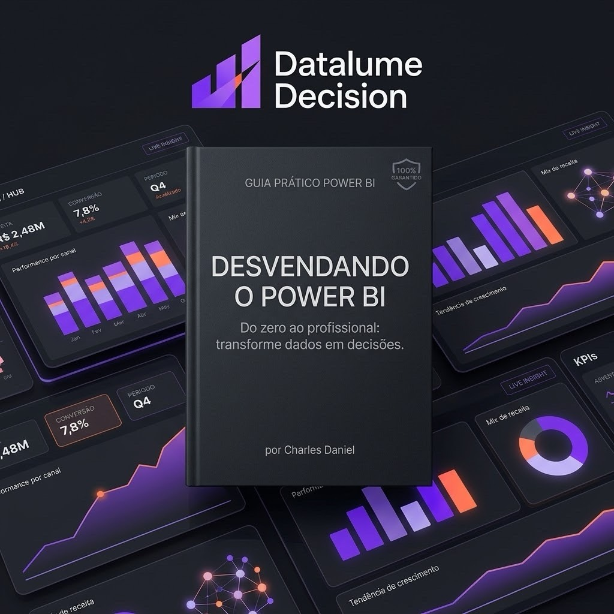
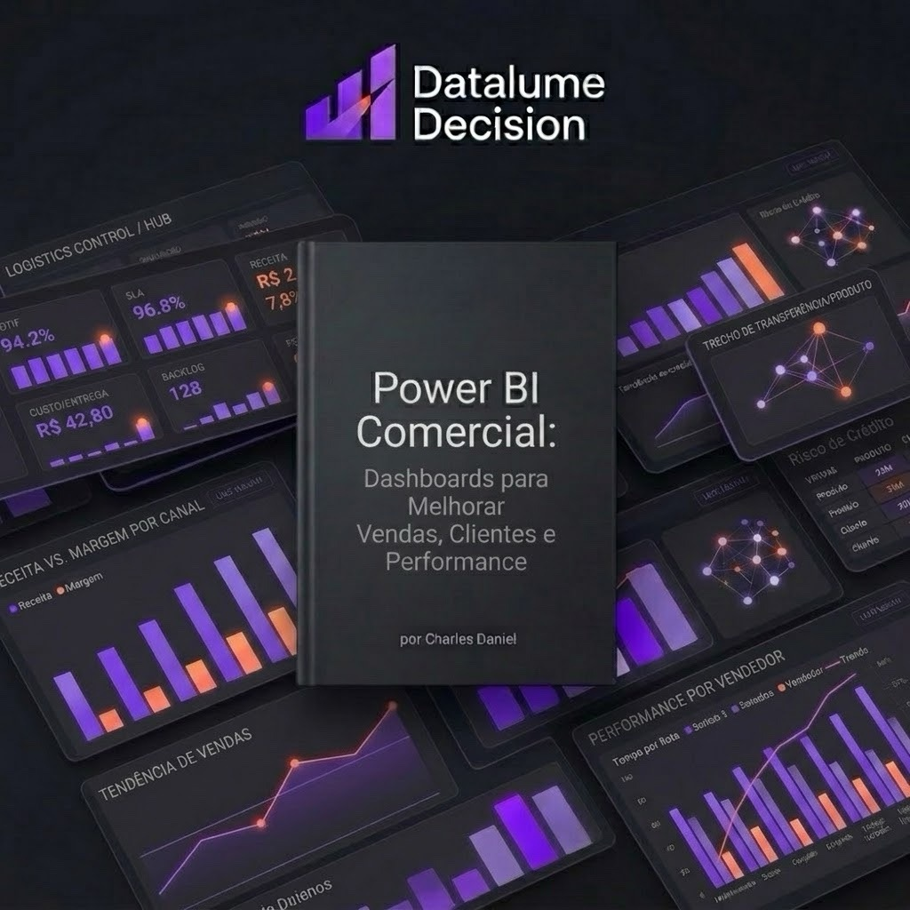
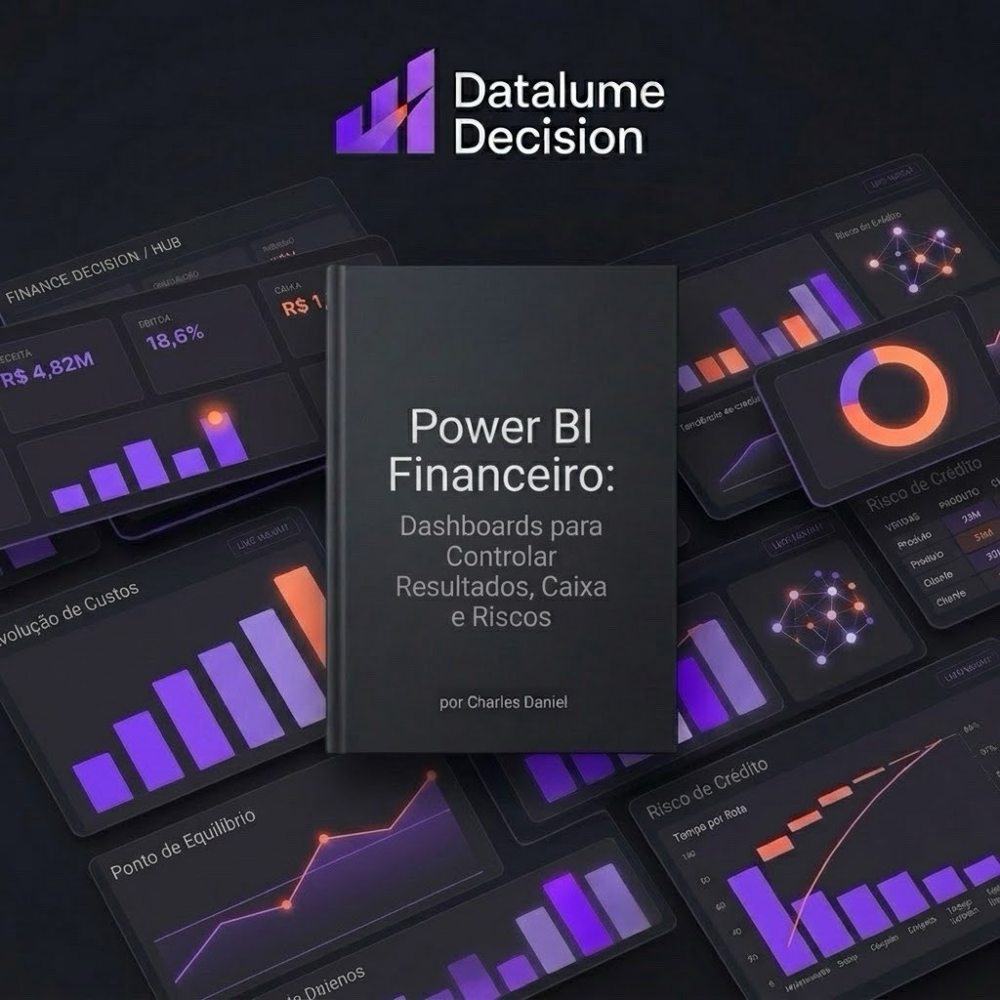
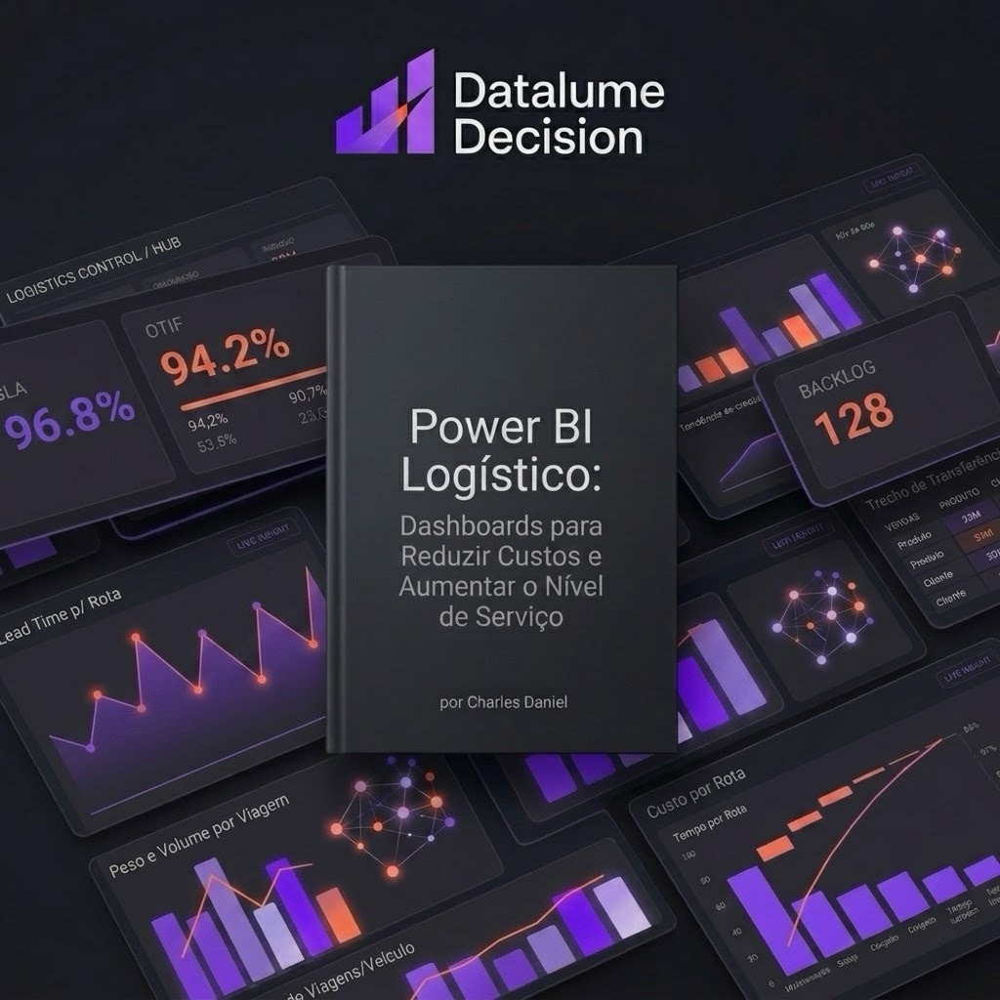

Desbloqueie o poder dos seus dados com Datalume Decision: a inteligência que impulsiona seus resultados.
Metodologias práticas e modelos de dashboards prontos criados por Charles Daniel para acelerar a maturidade analítica da sua empresa.

Do zero ao profissional: transforme dados brutos em decisões estratégicas de alto impacto.

Dashboards para alavancar vendas, retenção de clientes e performance de equipes.

Dashboards para controlar resultados, fluxo de caixa, margens e gestão de riscos.
Dashboards para aumentar o OEE, disponibilidade, qualidade e reduzir perdas fabris.

Dashboards para reduzir custos operacionais, rotas e aumentar o nível de serviço (SLA).
Tenha acesso a todos os modelos de dashboards, fórmulas DAX e análises práticas para Vendas, Finanças, Produção e Logística em um único pacote promocional.
Mas você está realmente usando essa mina de ouro para tomar as melhores decisões? Seus dados estão espalhados em sistemas diferentes, dificultando a análise e a tomada de decisões ágeis e informadas.
Múltiplos silos, fluxos desconectados, gargalos operacionais e perda constante de oportunidades.
Confiando mais na intuição do que em dados concretos? Sem métricas claras, cada escolha vira uma aposta arriscada.
Falhando em identificar tendências e insights cruciais? Seus concorrentes identificam o que você nem conseguiu enxergar.
Processos manuais e burocráticos para análise de dados? Equipes perdendo semanas gerando planilhas desatualizadas.
Tempo precioso perdido para coletar e processar informações? A demora na resposta custa contratos e lucratividade.
"Chega de adivinhações! Chegou a hora de transformar seus dados em decisões inteligentes e estratégicas."
A Datalume Decision é a sua parceira para a era da inteligência de negócios. Nossa plataforma inovadora e completa fornece tudo o que você precisa para tomar decisões mais rápidas, inteligentes e baseadas em dados.
Consolide todos os seus dados em um só lugar. Integre bancos de dados, ERPs, CRMs e planilhas em um único ecossistema seguro e unificado.
Crie dashboards intuitivos e fáceis de entender. Transforme métricas complexas em painéis visuais que qualquer executivo compreende em segundos.
Antecipe tendências e tome decisões proativas. Utilize algoritmos de IA avançados para prever comportamentos de mercado antes que eles aconteçam.
Automatize tarefas repetitivas e ganhe tempo para o estratégico. Gere relatórios automáticos, alertas de anomalia e gatilhos de decisão instantâneos.
Conecte-se com as principais ferramentas e sistemas legados sem atrito: SAP, Oracle, Salesforce, HubSpot, PostgreSQL, BigQuery, AWS e muito mais.
Após mais de 15 anos atuando em logística, percebi que os dados só geram valor quando ajudam a transformar problemas em decisões. Foi dessa experiência, unindo conhecimento operacional, gestão e tecnologia, que nasceu a Datalume Decision: uma empresa criada para transformar dados complexos em clareza, estratégia e resultados para as operações.
Mais do que criar dashboards, revelamos as respostas escondidas nos dados para mostrar onde estão as oportunidades, quais decisões precisam ser tomadas e como transformar informação em resultado.
O DNA que fundamenta cada algoritmo, relatório e decisão construída para nossos clientes.
Transformamos análises em ações que geram impacto real para o negócio.
Entendemos a realidade das operações antes de propor soluções.
Utilizamos informações confiáveis para reduzir incertezas e orientar escolhas melhores.
Tornamos dados complexos fáceis de compreender e utilizar.
Construímos soluções alinhadas aos desafios e objetivos de cada empresa.
Buscamos constantemente formas mais eficientes, inteligentes e sustentáveis de fazer melhor.
Trabalhamos com responsabilidade, confiança e clareza em todas as relações.
Nós não apenas fornecemos uma ferramenta, nós entregamos resultados concretos.
Equipe de especialistas com vasta experiência em inteligência de dados, arquitetura em nuvem e modelagem preditiva de alta complexidade.
Plataforma desenvolvida com as tecnologias mais modernas e robustas do mercado, garantindo escala infinita, estabilidade e segurança.
Atendimento personalizado e suporte dedicado para sua empresa. Você conta com consultores técnicos dedicados para impulsionar sua jornada.
Soluções integradas e sob medida para suas necessidades específicas. Não acreditamos em soluções genéricas: moldamos a inteligência ao seu modelo.
É simples: transformamos a complexidade de dados brutos em decisões estratégicas de alto impacto em 5 etapas transparentes.
Integramos seus sistemas e fontes de dados. Conectores nativos para ERPs, CRMs, Bancos de Dados SQL/NoSQL, APIs e planilhas em nuvem. Sincronização em tempo real sem complexidade de infraestrutura.
Entre em contato conosco e descubra como a Datalume Decision pode transformar sua empresa!
⚡ Atendimento 100% personalizado • Sem compromisso • Resposta rápida
"A Datalume Decision nos ajudou a aumentar nossas vendas em 20% em apenas seis meses."
"Com a Datalume Decision, conseguimos reduzir nossos custos operacionais em 15%."
"A Datalume Decision é a melhor ferramenta de inteligência de negócios que já usei."
Tudo o que você precisa saber sobre a implementação e benefícios da Datalume Decision.
A Datalume Decision é uma plataforma completa e moderna de Business Intelligence e Tomada de Decisões impulsionada por IA. Ela centraliza dados de múltiplos sistemas legados, planilhas e nuvem, gerando dashboards preditivos em tempo real e automações estratégicas para impulsionar a lucratividade da sua empresa.
Os principais benefícios incluem: aumento médio de 20% nas receitas de vendas, redução de até 15% nos custos operacionais, eliminação total do retrabalho manual com planilhas, tomada de decisões 5x mais rápida com embasamento preditivo e visualização 360° de toda a operação em dashboards vivos.
Nosso modelo é personalizado de acordo com o tamanho da sua operação, quantidade de fontes de dados e usuários necessários. Oferecemos planos sob medida com ROI garantido. Entre em contato conosco para receber uma proposta dimensionada exatamente para suas metas.
O acesso é 100% digital e imediato após a confirmação da compra. Você recebe os livros digitais em formato PDF de alta resolução, além dos arquivos e modelos de Power BI (.pbix) prontos para aplicar na sua empresa com suas próprias bases de dados.
É muito fácil! Basta clicar no botão "Entre em Contato Conosco" em qualquer parte desta página, preencher os dados da sua empresa e nossa equipe técnica entrará em contato em menos de 2 horas.